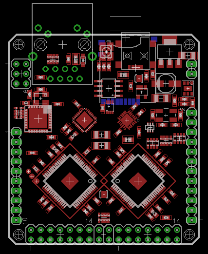

Amino Alpha Development Board Documentation
Alpha is the very first opensource hardware implementation and reference implementation for the Amino project. here are some key features:
- Full Amino stack support layers 1,2 and 3 including TCP/IP
- Built in debugging for layer 1
- External JTAG Debugging connector for Layer 2 and 3 debug.
- 10/100baseT Ethernet - implemented as an HSM
- Full speed (480Mb/sec) connection and PHY.
- Dedicated Serial communications UART and I2C on COMM port header
- Multiplexed 8 Channel 10bit successive approximation ADC with buffer
- 2 high speed XPorts offering up to 50MB/sec bandwidth each
- 2 L1-64 Xmos XS1 cores offering a total of 16 event driven threads
- 4Mbits of onboard SPI managed flash.
- An optional MicroSD card for storage,sketches,applications or participant data.
- A communications multi status RGB LED indicator
The Amino Alpha layout

Alpha Schematic